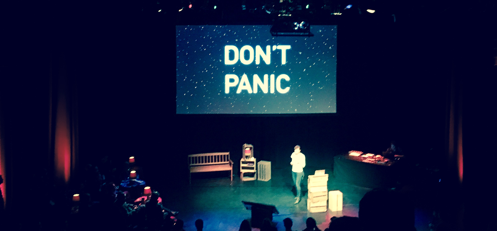

Me and my lovely coning partner were lucky enough to get free tickets for this year Berlin BTconf. In fact we were so lucky that this is our 3rd conference this autumn.

It is a general front-end/web/design conference. This particular instance had an absolute minimum of slides with code. Do with that information what you will. Some may not be happy about overall softness of talk and topics, but there are definitely ideas worth sharing and pondering on. Ever since ViewSource 2016, where people were friendly, talks were perspective changing, food and drinks were plentiful and delicious, and last week of Berlin summer warmed the hearts and MacBooks of attendees (in coalition with free bar of course), it was clear that what makes conference good is something elusive: atmosphere, vide, whatever you want to call it. These events do not exist in the vacuum, they are perceived in their immediate historic context with sprinkles of one's personal life events. And BTconf this year happened to be a very special snapshot of the very particular way of life.
The moment Sacha Judd made a hall full of tech folk contemplate on One Direction fandom it was on like donkey kong. It is rather unfair to identify this talk as the best, since there were many great ones, but this one hit us and our partner in crime Nynne directly in the feels. For most of the people on this room being a shipper, writing a fan fiction or cheesy fansite were not the direct life experiences, though they have been for is. But everyone could see the small tragedy of people doing things well and being excited about doing them not appreciating their own skill, effort and enthusiasm. Somehow this feels a lot like being a junior. This talk is wonderful and you should watch it. I will always remember not to be ashamed of my passion and things I've made.
There were funny and hands on talks, where I've been scribbling notes constantly. Big themes across them were accessibility, taking care of people outside the bubble of european/north american high-speed paradise, and relying on simple and robust technologies (so no React love). There was funny, creative (if slightly salty) advice on writing less code by Heydon Pickering (I am tempted to buy his book). Useful and very needed at the moment list of refactoring practices. Also notable talks on typography in interfaces and image optimisation
The elephant in the room was the USA election. It's best identified by a great switch from hopeful and angry talk by Mike Monteiro about taking the responsibility for what you do on the day of the election to a humane and accepting approach to data by Erika Hall the day after. It was an unspoken framework for the event, because so many speakers were americans. Another reminder how tech world is obsessed by America. And that's time to talk about
All the great concepts and talks aside there is still a feeling that we just like to pat ourselves on the backs. It is pleasant to feel that we are better than the rest of the world because we are woke developers and designers, because we are aware. Sobering talks helped, but these things are still prevalent in tech and especially at tech conferences. And despite the talks about diversity, it was still majority white and male conference, though we've met some inspiring women as well.
It's all about the toilets in the end. The joke I've made about how queue to women restroom is a very good sign for a tech conference still holds true, but also the fact that most tech conference still use gendered approach to restroom is something to think about. As Micaela noted RustFest was organised by a slightly different group of people and offered an interesting activism-fuelled DIY alternative to that. I think in many ways it is a generational thing. There is a growing number of developers who see more in their craft than just a career, for whom conferences are place to exchange ideas, but they can easily become an extension of our existing echo chambers. I guess it is a good idea to take some of the advices by speakers to heart and be responsible and proactive about our lives just as much about as our code.